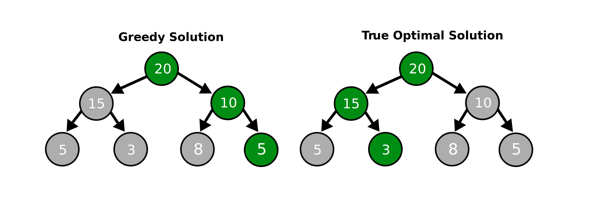

How it works
This is a simple explanation of MRF, how it works and why it’s useful. The algorithm is described in more detail in https://arxiv.org/abs/2006.12724.
Setup
Within the modern ML canon, random forest is an extremely popular algorithm because it allows for complex nonlinearities, handled high-dimensional data, bypasses overfitting, and requires little to no tuning. However, while random forest gladly delivers gains in prediction accuracy (and ergo a conditional mean closer to the truth), it is much more reluctant to disclose its inherent model.
MRF shifts the focus of the forest away from predicting \(y_t\) into modelling \(\beta_t\), which are the economically meaningful coefficients in a time-varying linear macro equation. More formally:
Where \(S_t\) are the state variables governing time variation and \(\mathcal{F}\) is a forest. \(X_t\) is typically a subset of \(S_t\) which we want to be time-varying. This setup provides strong generality. For instance, \(X_t\) could use lags of \(y_t\) - what is called an autoregressive random forest (ARRF). Typically \(X_t \subset S_t\) is rather small (and focused) compared to \(S_t\).
The beauty of the setup resides in combining the linear macro equation with the random forest ML algorithm. This allows our linear coefficient, which we can interpret and make inference about, to nest the important time-series nonlinearities captured by the forest.
Random Forest
For those unfamiliar with random forests, the general fitting procedure involves firstly bootstrapping the data to create a random sub-sample of observations. In time series, this will be a set of time indices \(l\) that becomes the parent node for our tree-splitting procedure.
After randomising over rows, we then take a random subset of the predictors, call it \(\mathcal{J}^-\). MRF then performs a search for the optimal predictor and optimal splitting point. For each tree, we implement least squares optimisation with a ridge penalty over \(j \in \mathcal{J}^{-}\) and \(c \in \mathbb{R}\), where c is the splitting point. Mathematically, this becomes:
Practically, optimisation over \(c\) happens by sampling empirical quantiles of the predictor to be split. These become the possible options for the splits and we evaluate least squares repeatedly to find the optimal splitting point for a given predictor \(j\). In an outer loop, we take the minimum to find \(j^* \in \mathcal{J}^{-}\) and \(c^* \in \mathbb{R}\).
This process is, in principle, a greedy search algorithm. A greedy algorithm makes “locally” optimal decisions, rather than finding the globally optimal solution.
However, various properties of random forests reduce the extent to which this is a problem in practice. First, each tree is grown on a bootstrapped sample, meaning that we are selecting many observation triplets \([y_t, X_t, S_t]\) for each tree that is fit. This means the trees are diversified by being fit on many different random subsamples. By travelling down a wide array of optimization routes, the forest safeguards against landing at a single greedy solution.
This problem is further alleviated in our context by growing trees semi-stochastically. In Equation \(\ref{a}\), this is made operational by using \(\mathcal{J}^{-} \in \mathcal{J}\) rather than \(\mathcal{J}\). This means that at each step of the recursion, a different subsample of regressors is drawn to constitute candidates for the split. This prevents the greedy algorithm from always embarking on the same optimization route. As a result, trees are further diversified and computing time reduced.
Random Walk Regularisation
Equation \(\ref{a}\) uses Ridge shrinkage which implies that each time-varying coefficient (\(\beta_t\)) is implicitly shrunk to 0 at every point in time. This can be an issue if a process is highly persistent, since shrinking the first lag heavily to 0 can incur serious bias. \(\beta_i = 0\) is a natural stochastic constraint in a cross-sectional setting, but its time series translation \(\beta_t = 0\) can easily be suboptimal. The traditional regularisation employed in macro is rather the random walk:
Thus it is desirable to transform Equation \(\ref{a}\) so that that coefficients evolve smoothly, which entails shrinking \(\beta_t\) to be in the neighborhood of \(\beta_{t-1}\) and \(\beta_{t+1}\) rather than 0. This is in line with the view that economic states last for at least a few consecutive periods.
This regularisation is implemented by taking the rolling-window view of time-varying parameters. That is, the tree, instead of solving a plethora of small ridge problems, will rather solve many weighted least squares (WLS) problems, which includes close-by observations. The latter are in the neighborhood (in time) of observations in the current leaf. They are included in the estimation, but are allocated a smaller weight. For simplicity and to keep the computational demand low, the kernel used by WLS is a simple symmetric 5-step Olympic podium.
Informally, the kernel puts a weight of 1 on observation \(t\), a weight of \(\zeta < 1\) for observations \(t-1\) and \(t+1\) and a weight of \(\zeta^2\) for observations \(t-2\) and \(t+2\). Since some specific \(t\)’s will come up many times (for instance if observations \(t\) and \(t+1\) are in the same leaf), MRF takes the maximal weight allocated to \(t\) as the final weight \(w(t; \zeta)\).
Formally, define \(l_{-1}\) as the lagged version of th leaf \(l\). In other words \(l_{-1}\) is a set containing each observation from \(l\), with all of them lagged one step. \(l_{+1}\) is the “forwarded” version. \(l_{-2}\) and \(l_{+2}\) are two-steps equivalents. For a given candidate subsample \(l\), the podium is:
Where \(\zeta < 1\) is the tuning parameter guiding the level of time-smoothing. Then, it is only a matter of how to include those additional (but down weighted) observations in the tree search procedure. The usual candidate splitting sets:
are expanded to include all observations of relevance to the podium:
The splitting rule then becomes: